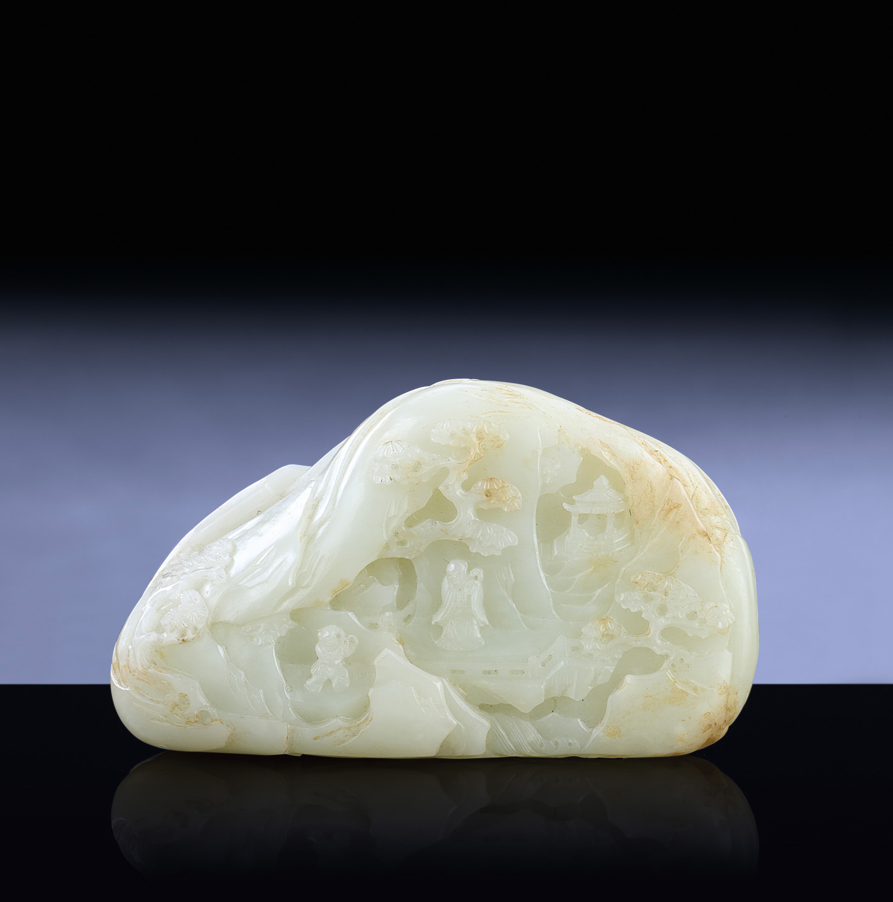

Jade: The Timeless Stone of Harmony and Purity

Chemical Formula: Nephrite - Ca2(MgFe)5(Si4O11)2(OH)2; Jadeite - NaAlSi2O6
Color: Green (various shades), White, Lavender, Orange
Hardness: Nephrite: 6 - 6.5; Jadeite: 6.5 - 7
Crystal System: Monoclinic
Localities: China, Myanmar (Burma), New Zealand, Guatemala, Canada
Common Uses: Jewelry, Sculpture, Ceremonial Objects, Healing Crystals
Jade is a gemstone that has captivated cultures around the world for thousands of years. Known for its vibrant green color and smooth texture, jade is highly valued in many cultures for its beauty, symbolism, and supposed mystical properties. It is a term that encompasses two distinct minerals: nephrite and jadeite. These two minerals, while visually similar, have different compositions and properties.
Jade has played a significant role in the cultural and spiritual practices of various civilizations, particularly in East Asia and Central America. It has been used to create everything from ceremonial objects and tools to intricate jewelry and sculptures. The stone's association with purity, harmony, and protection has made it a symbol of status and spiritual power.
Formation and Types of Jade
Jade forms in metamorphic rocks through a complex process involving high pressures and low temperatures. The two types of jade—nephrite and jadeite—have distinct mineral compositions and characteristics:
Nephrite
Composed mainly of calcium magnesium silicate, nephrite is typically found in a range of colors from creamy white to green and sometimes brown or black. It is softer than jadeite but tougher due to its fibrous structure.
Jadeite
Jadeite, a sodium aluminum silicate, is generally rarer and more valuable than nephrite. It is known for its vibrant green hues but can also be found in other colors including white, lavender, and orange.
Structure and Properties of Jade
Jade belongs to the monoclinic crystal system and forms in a massive fibrous or granular habit. It has a unique toughness which makes it highly resistant to breaking. This toughness is due to the interlocking fibrous structure of the mineral, particularly in nephrite.
Hardness: Jadeite has a hardness of 6.5 to 7 on the Mohs scale, while nephrite is slightly softer, ranging from 6 to 6.5.
Color: Jade is best known for its green color, though it can also be found in a variety of other shades depending on the type and the trace elements present.
Luster: Jade typically exhibits a waxy to vitreous luster, contributing to its smooth, polished appearance.
Uses of Jade

Jade has been used extensively throughout history for both practical and ornamental purposes.
- Jewelry: Jade is a popular choice for jewelry, including rings, necklaces, bracelets, and earrings. Its vibrant color and smooth texture make it a desirable stone for intricate carvings and designs.
- Sculpture and Art: In many cultures, jade is sculpted into figurines, statues, and decorative items. In Chinese culture, jade carvings often depict animals, deities, and mythical creatures symbolizing various virtues and beliefs.
- Tools and Weapons: Historically, jade was also used to make tools and weapons due to its toughness. Neolithic cultures fashioned jade into axes, knives, and other implements.
- Ceremonial Objects: Jade has been used to create ceremonial objects such as ritual vessels and burial items, reflecting its significance in spiritual and cultural practices.
History of Jade
Jade has a rich history that spans several millennia and across different cultures.
China
In Chinese culture, jade has been revered as the “Stone of Heaven.” It was used in rituals, burial practices, and as a symbol of moral integrity and spiritual power. The importance of jade is deeply ingrained in Chinese philosophy and history, where it was often associated with virtues like wisdom, justice, and compassion.
Mesoamerica
The Mayans and Aztecs of Central America also held jade in high esteem. They used it to create intricate jewelry, masks, and ceremonial items. Jade was considered more valuable than gold in these cultures and was believed to possess protective and healing properties.
New Zealand
The Māori of New Zealand used nephrite jade, known locally as pounamu or greenstone, to craft tools, weapons, and ornaments. Pounamu holds cultural significance for the Māori and is regarded as a treasure (taonga).
Unusual Varieties of Jade
Lavender Jade
This variety of jadeite is known for its soft purple hues. It is rarer than green jade and is often associated with serenity and spiritual growth.
Black Jade

Found in both nephrite and jadeite, black jade has an opaque dark appearance. It is believed to offer protection and grounding.
Yellow Jade
This variety ranges from pale yellow to rich golden hues and is associated with joy, happiness, and wisdom.
White Jade
Sometimes referred to as “mutton fat” jade, white jade is highly valued in Chinese culture for its purity and association with immortality.
Enhancement of Jade
To improve the appearance and value of jade, various enhancement techniques are employed:
- Bleaching: This process involves treating jade with acid to remove impurities and lighten the color. However, it can weaken the stone's structure.
- Dyeing: Jade, particularly lower-quality stones, is sometimes dyed to enhance or alter its color. This practice is common but can reduce the stone's value if not disclosed.
- Impregnation: Jade can be impregnated with wax or polymer to enhance its luster and stability. This treatment is often applied to jadeite to improve its appearance and durability.
- Heat Treatment: Heat can be used to alter the color of jade, usually to intensify its hues. This method is less common but is sometimes employed to enhance jadeite.
Jade Market and Trade
The jade market is complex and varies significantly based on the type, quality, and origin of the stone:
- Value Determinants: The value of jade is determined by several factors including color, translucency, texture, and size. Jadeite is typically more valuable than nephrite, with the finest imperial jadeite fetching the highest prices.
- Global Trade: Myanmar (Burma) is the primary source of jadeite, while nephrite is mainly sourced from China, Canada, and New Zealand. The trade of jade is significant in regions where it holds cultural importance, particularly in China and Southeast Asia.
- Market Trends: The demand for jade, especially in China, continues to drive prices higher. High-quality jadeite remains one of the most valuable gemstones, with prices sometimes exceeding those of diamonds.
Buy & Sell Authentic Jade Here
Where to Find Jade in the United States
Jade is found in different locations throughout the United States, including California, Oklahoma, Washington, and more. Use our gemstone and crystals map to locate different jade locations in the United States.
Use our map to get exact locations to find jade in the United States.
Caring for Jade
To maintain the beauty and integrity of jade, proper care is essential:
- Cleaning: Clean jade with warm soapy water and a soft brush. Avoid harsh chemicals or ultrasonic cleaners as they can damage the stone.
- Storage: Store jade separately from other gemstones to prevent scratching. Wrapping it in a soft cloth or placing it in a padded jewelry box is recommended.
- Handling: Jade is tough but can be prone to chipping. Handle with care, especially when wearing jade jewelry.
- Repolishing: Over time, the surface of jade may become dull. Professional repolishing can restore its original luster.
Metaphysical Properties of Jade
Jade is believed to possess a variety of metaphysical properties, particularly in the realms of emotional healing and spiritual growth.
- Harmony and Balance: Jade is often associated with creating harmony and balance in one's life. It is believed to calm the mind, reduce stress, and promote a sense of peace and serenity.
- Protection: Many cultures believe jade offers protection from harm and negative energy. It is often used as an amulet or talisman to safeguard the wearer.
- Prosperity and Good Fortune: Jade is also considered a stone of prosperity, attracting wealth and abundance. It is often used in feng shui practices to invite good luck and financial success.
- Physical Healing: In alternative medicine, jade is sometimes used to support the body's detoxification process and strengthen the immune system. It is also believed to aid in the treatment of kidney problems due to its traditional association with the kidneys.
See Also
- Related Crystals and Gemstones: Aquamarine, Citrine, Garnet
- Related Topics: Everything About Jade: The Ultimate Guide to Understanding Jade